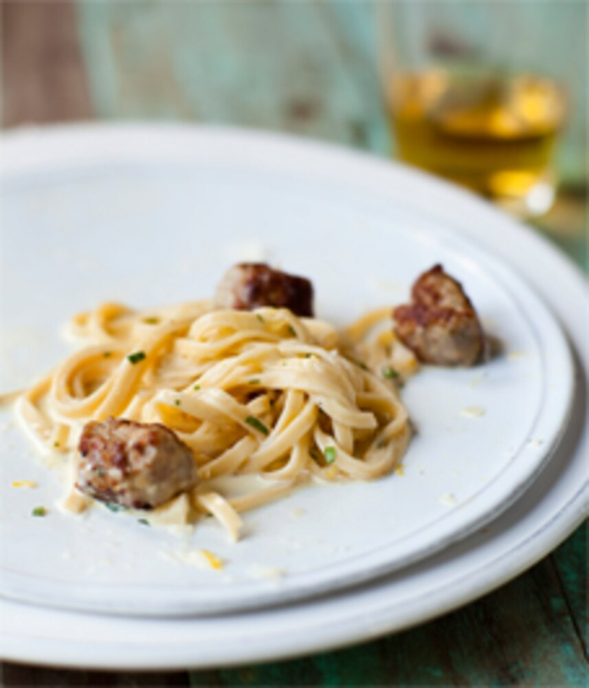

Egg Sauce Linguine (with Sausage)
From "The Newlywed Cookbook," by Sarah Copeland

Description
I don't know about you all, but I love pasta. There's just something about the combination of taste, texture, and familiarity that makes it one of my ultimate comfort foods.
This particular recipe is a favorite in my household. We usually use spaghetti, rather than linguine, and we usually don't go through the trouble of removing the casing from the sausage, opting for sausage slices rather than meatballs. But to each their own; it will be delicious regardless.
Fun fact: I once used this recipe to salvage an anniversary evening for my wife and me. She had been planning all day to cook this pasta as a nice anniversary dinner for the two of us since we both love it so much; she had gotten fresh, hand-made linguine noodles, and fancy sausage and everything. And of course, an unexpected emergency popped up that caused her to be away from home all afternoon and into the late evening. While I hadn't ever made this pasta before (and, in general, am not the most illustrious in the kitchen), the recipe was simple enough to follow that I was able to prepare the meal and have it ready by the time she got home. So while it would certainly be a stretch to say that this recipe saved my marriage, I'm just saying that it helped.
Serves 2-4.
Ingredients
- 1 lb sweet or spicy Italian sausages (I always go for spicy when given the option)
- 2 tbsp extra-virgin olive oil
- Sea salt
- Freshly ground black pepper
- 1 lb linguine pasta, fresh or dried
- 4 large organic egg yolks
- 1/2 cup / 120 ml whole milk or half-and-half / half cream
- 3/4 cup freshly grated Parmigiano-Reggiano cheese
- Grated zest of 1 lemon
- Handful of fresh chives or flat-leaf parsley, chopped
Steps
- Cut/slice the skins of the sausage, and peel back the skins. Cut the sausage into small meatballs.
- Heat the olive oil in a large frying pan over medium-high heat and fry the sausage until golden-brown all over, about 5 minutes.
- Meanwhile, cook the linguine in boiling salted water until it is just al dente (3-5 minutes for fresh, and 10-12 minutes for dried).
- Whisk together the egg yolks, milk, half the grated cheese, pepper, and lemon zest.
- Drain the pasta and reserve about 1/2 cup / 120 ml cooking liquid. Add the pasta back to the pot along with the egg mixture.
- Add the hot sausage, toss it all together, and let the heat from the pot and the linguine cook and thicken the egg to a silky sauce. Add 1/4 to 1/2 cup / 60 to 120 ml of the reserved pasta water to loosen.
- Toss with the remaining cheese and chives or parsley and serve fresh from the stove in shallow bowls or plates.